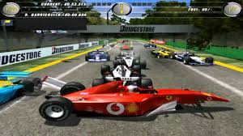
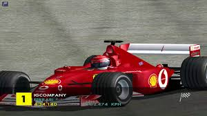

La temporada 2002 fue la 53º edición de la Fórmula 1. Comenzó el 10 de marzo en el Gran Premio de Australia y terminó el 27 de octubre en el Gran Premio de Japón. Se adjudicaron puntos a los seis primeros lugares (10, 6, 4, 3, 2, 1), sin limitaciones
de máximo de carreras computables.
Formula 1 2002 (PC)
$ 300
Desripción
Las carreras de Gran Premio tienen sus raíces en las carreras automovilísticas surgidas en Francia en 1894. En un principio se trataba de eventos individuales, sin conexión y en caminos de tierra, prácticamente sin ninguna limitación.7 De 1927 a
1934, el número de carreras consideradas Gran Premio creció hasta alcanzar dieciocho en 1934, el máximo antes de la Segunda Guerra Mundial.8